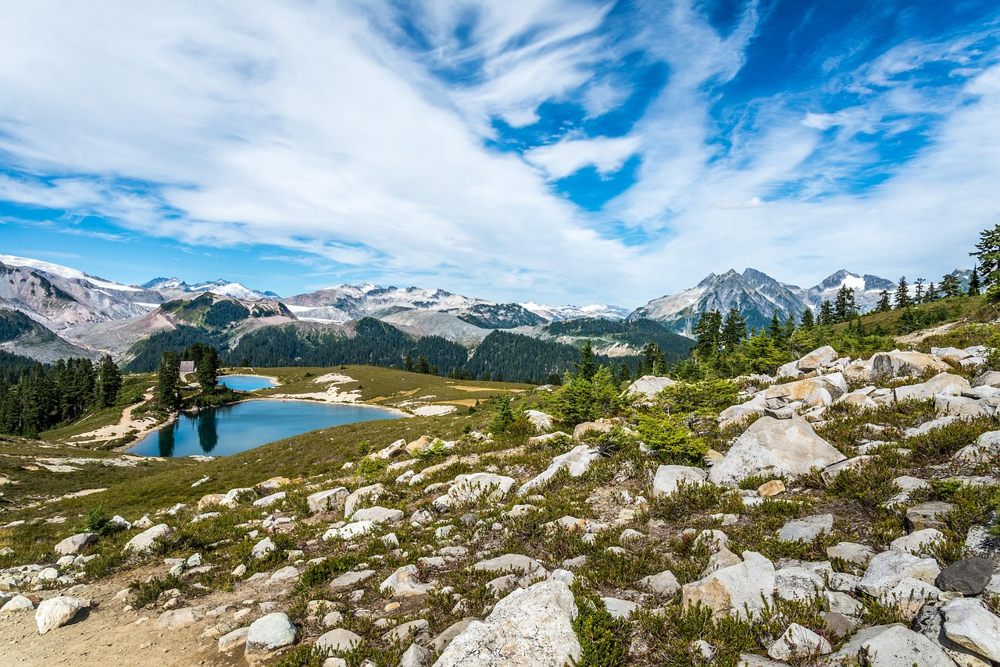
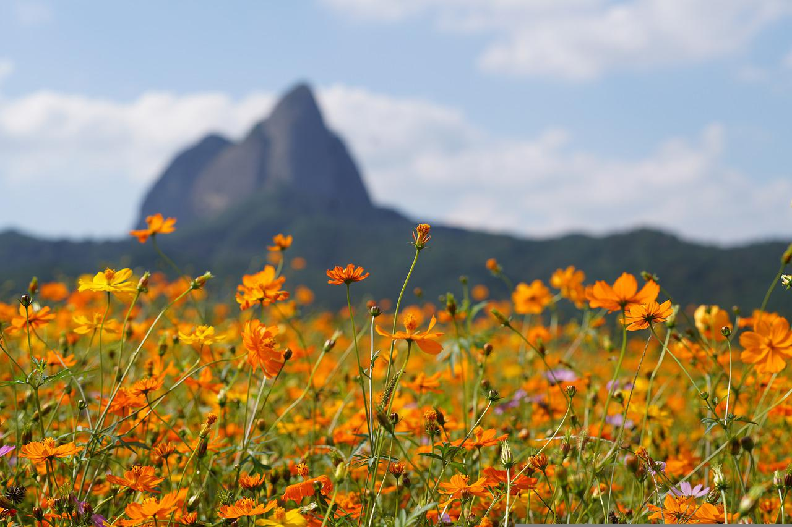

The Importance of Protected Areas

The Importance of Protected Areas
A protected area is a geographical space recognized, protected, and managed to achieve long term conservation of an environment. Protected areas offer opportunities for people to learn and connect with nature, while still conserving biodiversity for the future and present generation.
However, in recent years climate change has impacted the environment severely and made ecosystems uninhabitable for native plants, wildlife, and humans. It is crucial to protect these areas. Effectively managing protected areas is critical for safeguarding biodiversity, maintaining balanced ecosystem, preserving important habitats, building resilience to climate change, providing global food security, maintaining water quality, conserving natural resources, driving economic success, reducing the spread of diseases and pests, and providing numerous other benefits to wildlife and humans wellbeing.
Websites That Provide Further Information on Protected Areas and Conservation Programmes
Natural Areas Conservation Program
Best Environmental Conservation Programs for Eco Volunteers
Federal Marine Protected Areas Strategy
Protected Planet
Parks & Protected Areas - CPAWS
Protected Areas and Conservation - Our World in Data

"The environment is so fundamental to our continued existence that it must transcend politics and become a central value of all members of society." - David Suzuki
©Cassandra T - Assignment 2 - COMP 213 Fall 2022 ©FAMOUS PEOPLE ©Pixabay ©Government of Canada ©Campaign of Nature